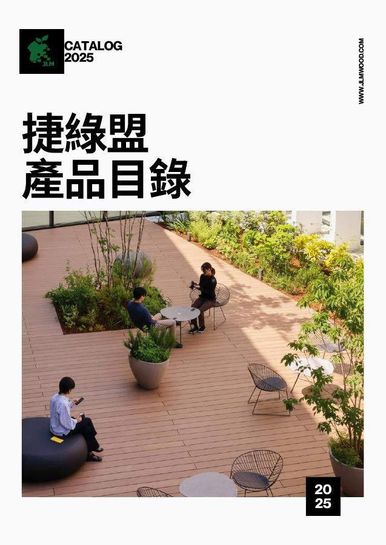

建材採購與空間應用
提供板材、角材與襯板，依用途確認尺寸、色系與固定條件。


01 / 循環材料技術
材料成形、精密加工，
串接再生資源與產業應用。
將回收塑膠製成捷綠木板材、角材與襯板，結合裁切、CNC 加工及技術合作，回應空間、產品與展場的製作需求。
板材 · 角材 · 襯板
MATERIAL PRODUCTION / 材料成形
製造成形、裁切與 CNC 加工，
讓尺寸、輪廓與細節逐步落實。

以回收 PS 改質與成形製程，將再生資源轉化為可供加工與應用的材料。
02 / 選擇合作方式
材料採購、加工製作或技術合作，
選擇方向，開始整理你的需求。
提供板材、角材與襯板，依用途確認尺寸、色系與固定條件。

提供圖面、厚度與數量，討論形狀、加工細節與製作可行性。

提供原料來源、設備條件與預計產品，討論循環再生技術合作及移轉範圍。
TECHNOLOGY TRANSFER / 技術移轉合作
捷綠盟的技術移轉合作涵蓋材料配方、設備與製程，以及操作培訓。依原料條件、設備配置與產品目標，規劃技術導入與製造端協作，銜接再生材料製造與實際應用。
03 / 看見應用
從展場、戶外地坪到牆面與格柵，
依用途、規格與施工條件評估材料應用。
EXHIBITION / 展場設計
從展場全景到展示細節，讓材料串起空間。
20 組應用圖集 · 69 張應用照片＋1 張影像優化版
精選 6 組案例
影像來源包含捷綠盟 2025 產品目錄與企業提供的實景照片。各相簿標示來源與應用部位；材料供應、設計、加工及施工角色，依個別專案資料確認。
DESIGN INSPIRATION
空間應用
 情境示意
情境示意讓平台順著地景，留一處停歇
 情境示意
情境示意在室內與戶外之間，留住光與風
 情境示意
情境示意以面板與線條，描繪林間的輪廓
 情境示意
情境示意沿著水岸，讓步伐與綠意相伴
 情境示意
情境示意在水邊，構想一段從容的停留
左右滑動，瀏覽空間靈感。實際選材與施工條件，依使用環境評估。
04 / 選擇材料
依用途比較系列、規格與色系。
下列尺寸為截面參考，完整尺寸請見型錄。
捷綠木 / 目錄材料實拍這次設計，用在哪裡？
以平整板材，承接家具面板、產品與展示製作的設計需求。
板材｜家具面板、產品與展示製作。
襯板｜牆面、外飾面板與收邊。
角材｜裝修框架與固定配置。
下列厚度與寬度為截面參考。長度、加工公差、表面處理與供貨條件，請依型號另行確認。
MATERIAL DETAILS / 材料實拍
透過材料樣本與板材堆疊實景，了解色系、板件與材料外觀；實際規格依產品型號確認。


05 / 製造與加工
透過設備運作與加工細節，
理解材料如何銜接製作需求。
ON SITE / 製程實景
三段捷綠盟團隊於其他場域拍攝的現場紀錄，呈現設備配置、物料運作與製程細節。
01 / PRODUCTION RECORD
觀察設備配置與材料在產線中的運作。
02 / PRODUCTION RECORD
以近距離畫面補充設備與現場細節。
03 / PRODUCTION RECORD
觀察顆粒狀物料與設備的現場運作。
點擊播放現場紀錄。影片移除人聲，以設備與材料細節為主；拍攝場域不作為捷綠盟自有廠房或產能的聲明。
02 / PRECISION & POSSIBILITY
透過裁切與 CNC 加工，將圖面的尺寸與形狀轉為實體。提供圖面、用途與數量，我們會依需求評估製作方式。
整理合作需求 ↗06 / 型錄與選材指南
查閱材料系列、規格與應用案例，
為下一步的設計與製作建立方向。

2025 EDITIONPRODUCT CATALOG / 產品目錄
板材 · 角材 · 襯板 · 空間應用
MATERIAL GUIDE / 選材問答
捷綠木使用回收 PS 與改質劑，不添加木粉。其材料組成與天然木材不同；選用時需一起確認用途、尺寸、固定方式及使用環境。
目錄分為板材、角材與襯板三大系列，色系包含灰、白、淺咖、深咖、黑與木紋押花。板材厚度包含 7.9、9、12、15、19 mm，詳細尺寸請參閱型錄。現貨、表面處理與生產批次，請於採購前確認。
可提出裁切與 CNC 加工需求，提供圖面、尺寸、用途及數量後，再評估加工可行性、加工公差與報價。
目錄收錄戶外地板與景觀應用。具體選材仍須確認使用環境、跨距、荷重、支撐與固定方式；結構設計應由相關專業人員評估，並依實際使用條件確認材料適用性。
請先告知預計使用的產品型號與專案條件，再確認對應檢測文件、適用範圍與可行的回收安排。不同產品、加工與使用狀況，需要個別確認。
合作範圍涵蓋材料配方、設備與製程，以及操作培訓。依合作方的原料來源、既有設備與預計產品，討論技術導入條件、製造流程及人員操作需求，再確認移轉範圍、雙方分工與導入安排。
07 / 確認選材依據
查閱產品型錄、報導與現場紀錄，
為下一步的設計與採購做好準備。
PRODUCT DOCUMENT
查閱 2025 目錄的系列、型號、尺寸、色系與應用圖集，作為初步選材依據。
閱讀產品型錄 ↗MEDIA / 2025.10.03
CIO Taiwan 專訪捷綠盟，介紹材料研發、製造轉型與跨場域應用方向。
閱讀媒體原文 ↗ON-SITE RECORDS
透過設備與材料運作的現場影像，了解製造流程與加工細節。
觀看製程紀錄 ↗提供已知資訊即可，其餘可在洽詢時逐項討論。
產品性能與標章須以對應型號的有效文件為準；媒體報導與施工影片不等同產品認證。